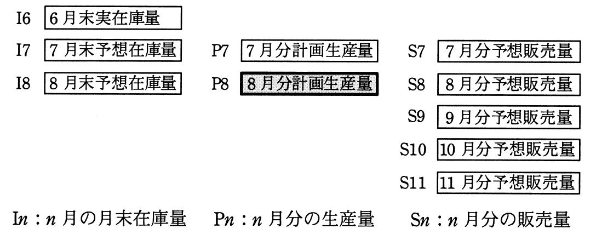

ある会社の生産計画部では，毎月25日に次の手続で翌月分の計画生産量を決定している。8月分の計画生産量を求める式はどれか。
〔手続〕
（1）当月末の予想在庫量を，前月末の実在庫量と当月分の計画生産量と予想販売量から求める。
（2）当月末の予想在庫量と，翌月分の予想販売量から，翌月末の予想在庫量が翌々月から3か月間の予想販売量と等しくなるように翌月分の計画生産量を決定する。

ア I6＋P7−S7＋S8
イ S8＋S9＋S10＋S11−I7
ウ S8＋S9＋S10＋S11−I8
エ S9＋S10＋S11−I7